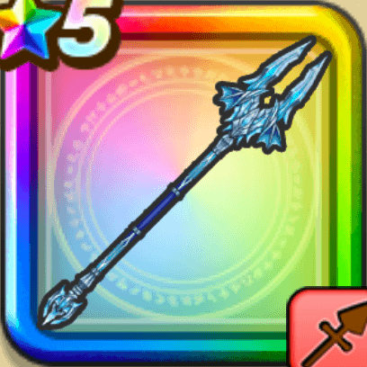

蒼竜のやり
攻略班 7.0点 / けものづきしんくうは一閃突き改氷柱突き凍てつく竜槍※錬成で強化可能
くわしい特徴
【レベル別習得スキル】 Lv1【バトマス】すばやさ+5 Lv1けものづき（消費MP：3）けもの系に威力180%それ以外の系統には120%の斬撃ダメージを与える Lv10しんくうは（消費MP：9）体術で大気を切り裂き、敵全体に120%のバギ属性体技ダメージを与える Lv15一閃突き改（消費MP：10）失敗しやすいが敵1体に40%の確率で斬撃ダメージの会心の一撃を与える。こころや心珠で会心率を上げても影響を受けない。 Lv20氷柱突き（消費MP：21）植物系に威力350%それ以外の系統には290%のヒャド属性斬撃ダメージを与える Lv30凍てつく竜槍（消費MP：26）冷気を纏わせた槍を放ち敵全体に威力250%のヒャド属性斬撃ダメージを与える Lv35けもの系へのダメージ+5% Lv40植物系へのダメージ+5% Lv45攻撃時+2%の確率で眠りを与える Lv50攻撃力+12錬成スキル改1植物系へのダメージ+10%改2凍てつく竜槍改（消費MP：33）敵全体に威力285%のヒャド属性斬撃ダメージを与える改3けもの系へのダメージ+10%改4錬成ぶき特別演出解放・メガモン討伐結果発表時に特別演出が追加・武器の見た目に特別なエフェクトが追加 【限界突破スキル】 1凸スキルの斬撃・体技ダメージ+5% 2凸スキルの斬撃・体技ダメージ+5% 3凸スキルの斬撃・体技ダメージ+5% 4凸スキルの斬撃・体技ダメージ+5%